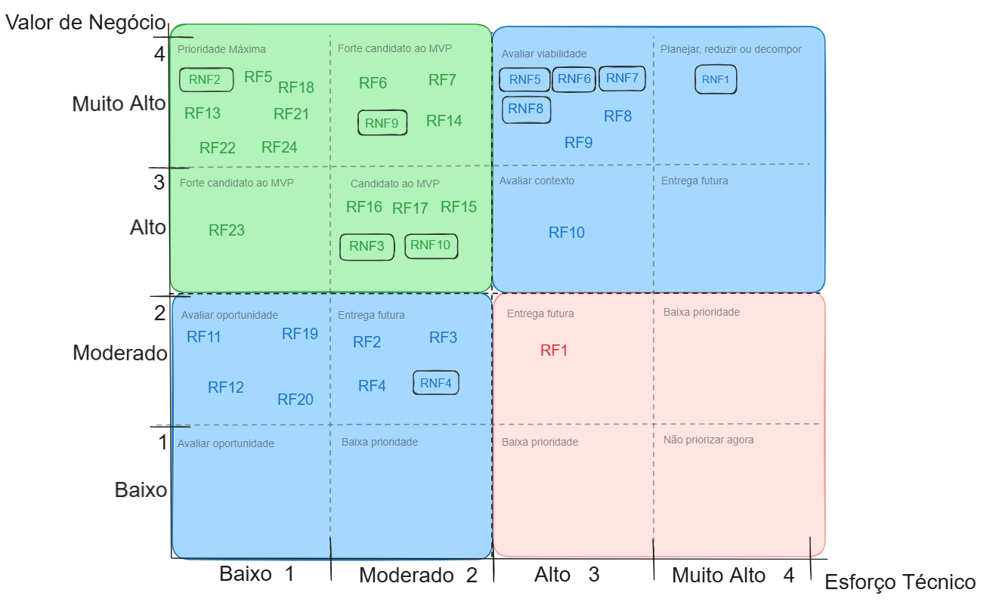

Versão Arquivada (v2.1 — 07/11/2026)
Esta é uma cópia histórica intermediária da Unidade 3 (commit ba950ba). Acessar a versão atual.
10 Backlog do produto
Aqui vale ressaltar que todos os casos de uso a seguir são derivados das nossas listas de requisitos apresentado anteriormente nesse documento. Essa é uma lista tem o intuito de atender a representação de requisitos de produto, pra auxiliar duranto o desenvolvimento, e tamebm é preliminar e deverá sofrer ajustes sempre que necessário durante o desenvolvimento do produto do SIGMA;
10.1 Backlog Geral do Produto e Planejamento das Entregas
O Backlog do Produto organiza as entregas do sistema SIGMA orientadas por Casos de Uso e seus respectivos fluxos operacionais, alinhando as necessidades da Creche Estação Vida ao ciclo iterativo do processo OpenUP.
Para assegurar o acompanhamento transparente da evolução do projeto, o estado de cada funcionalidade é distinguido nas três dimensões do ciclo de desenvolvimento: - Especificação: Status da modelagem e documentação de requisitos (Fechada para todos os Casos de Uso homologados na Unidade 2). - Implementação: Estado atual da codificação (Planejada, Em andamento, Em revisão ou Fechada). - Validação: Validação formal com os stakeholders (Fechada para consenso de requisitos e protótipos; Planejada para a homologação integrada do software na Iteração 8).
Quadro de Planejamento do Backlog
| Item / Caso de Uso | Fluxos e Requisitos Contemplados | Iteração Prevista | Dependências | Responsáveis | Especificação | Implementação | Validação de Software |
|---|---|---|---|---|---|---|---|
| UC01 - Gerenciar Autenticação | FP01 (Login - RF06, RNF05), FP02 (Logout - RF07), RNF02 | Iteração 4 (Construção) | Nenhuma | A definir | Fechada | Em andamento | Planejada |
| UC02 - Gerenciar Usuários Administrativos | FP01 (Cadastro de usuário - RF05, RNF02) | Iteração 4 (Construção) | UC01 | A definir | Fechada | Em andamento | Planejada |
| UC04.1 - Cadastro e Fichas de Matrícula | FP01 (Cadastro de card, fichas e salvamento - RF08, RF09, RF23, RNF08) | Iteração 4 (Construção) | UC01, UC06.1 | A definir | Fechada | Em andamento | Planejada |
| UC04.2 - Edição e Histórico de Matrícula | FA01 (Edição de fichas e histórico de alterações - RF10, RF17, RF23) | Iteração 5 (Construção) | UC04.1 | A definir | Fechada | Planejada | Planejada |
| UC05 - Gerenciar Documentos Digitais | FP01, FA01 (Upload, substituição e download de PDFs - RF14, RF15, RF16, RN05) | Iteração 6 (Construção) | UC04.1 | A definir | Fechada | Planejada | Planejada |
| UC06.1 - Cadastro de Etapas e Turmas | FP01 (RF18 - Etapa), FP02 (RF24 - Turma com etapa vinculada) | Iteração 7 (Construção) | UC01 | A definir | Fechada | Planejada | Planejada |
| UC07 - Alocar Alunos | FP01 (Alocação de aluno em turma - RF13, RF21, RF22, RNF06, RNF07) | Iteração 7 (Construção) | UC04.1, UC06.1 | A definir | Fechada | Planejada | Planejada |
| UC08 - Consultar Registros (Busca) | FP01 (Busca por aluno, turmas e etapas - RF21, RF22, RNF06, RNF07) | Iteração 7 (Construção) | UC04.1, UC06.1 | A definir | Fechada | Planejada | Planejada |
| [UC04.3 - Inativação e Reativação] | FA02 (Inativar - RF11), FA03 (Reativar - RF12) | Pós-MVP | UC04.1 | A definir | Fechada | Planejada | Planejada |
| [UC06.2 - Estrutura Escolar Avançada] | FP03 (Vincular turma à etapa - RF20), FP04 (Inativar turma/etapa - RF19) | Pós-MVP | UC06.1 | A definir | Fechada | Planejada | Planejada |
| [UC03 - Quadro de Avisos] | FP01 a FP04 (Gestão de avisos - RF01, RF02, RF03, RF04) | Pós-MVP (Versão 2.0) | UC01, UC02 | A definir | Fechada | Planejada | Planejada |
A seguir uma tabela que Relaciona os requisitos do nosso sistema com os casos de uso.
Rastreabilidade entre Requisitos e Casos de Uso
| ID | Nome | Casos de uso vinculados |
|---|---|---|
| RF01 | Disponibilizar quadro de avisos | UC03 - Gerenciamento de quadros de avisos |
| RF02 | Lançar avisos | UC03 - Gerenciamento de quadros de avisos |
| RF03 | Exibir avisos | UC03 - Gerenciamento de quadros de avisos |
| RF04 | Apagar avisos | UC03 - Gerenciamento de quadros de avisos |
| RF05 | Cadastrar Usuários | UC02 - Gerenciar usuários administrativos / UC03 - Gerenciamento de quadros de avisos |
| RF06 | Realizar login | UC01 - Gerenciar autenticação |
| RF07 | Realizar logout | UC01 - Gerenciar autenticação / UC03 - Gerenciamento de quadros de avisos |
| RF08 | Cadastrar card de aluno | UC04 - Gerenciar cards de matrícula |
| RF09 | Preenchimento de fichas | UC04 - Gerenciar cards de matrícula |
| RF10 | Editar fichas do card | UC04 - Gerenciar cards de matrícula |
| RF11 | Inativar card de aluno | UC04 - Gerenciar cards de matrícula |
| RF12 | Reativar card de aluno | UC04 - Gerenciar cards de matrícula |
| RF13 | Vincular aluno a turma | UC07 - Alocar alunos |
| RF14 | Anexar documentos | UC05 - Gerenciar Documentos Digitais |
| RF15 | Editar documento | UC05 - Gerenciar Documentos Digitais |
| RF16 | Baixar fichas e documentos | UC05 - Gerenciar Documentos Digitais |
| RF17 | Apresentar histórico de edições | UC04 - Gerenciar cards de matrícula |
| RF18 | Cadastrar Etapa | UC06 - Gerenciar estrutura escolar (Etapas e Turmas) |
| RF19 | Inativar turma e etapa | UC06 - Gerenciar Estrutura Escolar (Etapas e Turmas) |
| RF20 | Vincular turma à etapa | UC06 - Gerenciar Estrutura Escolar (Etapas e Turmas) |
| RF21 | Buscar aluno pelo nome | UC08 - Consultar Registros (Busca) / UC07 - Alocar Alunos |
| RF22 | Buscar turmas e etapas | UC08 - Consultar Registros (Busca) / UC07 - Alocar Alunos |
| RF23 | Possibilitar salvamento de dados | UC04 - Gerenciar cards de matrícula |
| RF24 | Cadastrar Turma | UC06 - Gerenciar Estrutura Escolar (Etapas e Turmas) |
| RNF01 | Privacidade de Dados e Retenção Segura | GLOBAL / Transversal (UC01, UC02, UC04, UC05, UC07, UC08) |
| RNF02 | Restrição de Acesso não Autenticado | UC01 - Gerenciar autenticação / UC07 - Alocar Alunos / UC02 - Gerenciar usuários administrativos |
| RNF03 | Interface responsiva e adaptável a múltiplos dispositivos | GLOBAL |
| RNF04 | Interface com suporte a Modo Escuro alternável | GLOBAL |
| RNF05 | Tempo de Resposta do Sistema ao Logar | UC01 - Gerenciar autenticação |
| RNF06 | Tempo de Resposta do Sistema ao Buscar aluno | UC07 - Alocar Alunos / UC08 - Consultar Registros (Busca) |
| RNF07 | Tempo de resposta do sistema para buscar turmas ou etapas | UC07 - Alocar Alunos / UC08 - Consultar Registros (Busca) |
| RNF08 | Tempo de resposta para salvar uma ficha | UC04 - Gerenciar cards de matrícula |
| RNF09 | Disponibilidade do sistema | GLOBAL |
| RNF10 | Acessos Múltiplos | GLOBAL |
10.2 Priorização do Backlog e MVP
Para a inserção dos requisitos no MVP, efetuamos uma análise plural considerando as posições de cada requisito funcional e não-funcional na Matrix 4x4, alocando aqueles que apresentavam mais valor de negócio e menos esforço técnico. Além das posições da Matriz 4x4, foi considerado uma análise de contribuição para a solução do problema e relacionamento direto com o cumprimento dos objetivos do projeto. Em geral, acrescentamos ao MVP, aqueles requisitos indispensáveis e vitais para o desenvolvimento e implementação da solução, cujos complementam as funcionalidades que ja estariam no MVP .
Consolidação das Avaliações
| ID | Requisito | Justificativa do cliente | V. Negócio | Esforço | Complexidade | Lacuna de Capacidade | Esforço técnico consolidado |
|---|---|---|---|---|---|---|---|
| RF1 | Disponibilizar quadro de avisos | Se manifestou como um desejo da cliente | 2 | 2 | 3 | 1 | 2.0 |
| RF2 | Lançar avisos | Se manifestou como um desejo da cliente | 2 | 2 | 3 | 1 | 2 |
| RF3 | Exibir avisos | Se manifestou como um desejo da cliente | 2 | 2 | 3 | 1 | 2 |
| RF4 | Apagar avisos | Se manifestou como um desejo da cliente | 2 | 2 | 3 | 1 | 2 |
| RF5 | Cadastrar usuários | Necessidade da cliente, para cadastrar possíveis novos usuários | 4 | 1 | 2 | 1 | 1.3 |
| RF6 | Realizar login | O sistema deve ser protegido por login | 4 | 1 | 2 | 2 | 1.6 |
| RF7 | Realizar logout | O logout é necessário para garantir a segurança física do computador contra acessos indevidos | 4 | 1 | 2 | 2 | 1.6 |
| RF8 | Cadastrar card de aluno | Função essencial, visa resolver o problema principal | 4 | 3 | 3 | 2 | 2.6 |
| RF9 | Preenchimento de fichas | Função essencial, visa resolver o problema principal | 4 | 3 | 3 | 2 | 2.6 |
| RF10 | Editar fichas de card | Função essencial, visa resolver o problema principal | 3 | 3 | 3 | 2 | 2.6 |
| RF11 | Inativar card de aluno | Útil para organização interna | 2 | 1 | 1 | 1 | 1 |
| RF12 | Reativar card de aluno | Útil para organização interna | 2 | 1 | 1 | 1 | 1 |
| RF13 | Vincular aluno a turma | Útil para organização interna | 4 | 1 | 1 | 2 | 1.3 |
| RF14 | Anexar documentos | Função essencial, visa resolver o problema principal | 4 | 1 | 2 | 2 | 1.6 |
| RF15 | Editar documento | Função essencial, visa resolver o problema principal | 3 | 1 | 2 | 1 | 1.3 |
| RF16 | Baixar fichas e documentos | Função essencial, visa resolver o problema principal | 3 | 1 | 2 | 4 | 2.3 |
| RF17 | Apresentar histórico de edições | Útil para organização interna | 3 | 2 | 2 | 2 | 2 |
| RF18 | Cadastrar Etapa | Útil para organização interna | 4 | 1 | 1 | 1 | 1 |
| RF19 | Inativar Turma e Etapa | Útil para organização interna | 2 | 1 | 1 | 1 | 1 |
| RF20 | Vincular turma à etapa | Útil para organização interna | 2 | 1 | 1 | 2 | 1.3 |
| RF21 | Buscar aluno pelo nome | Função essencial, visa resolver o problema principal | 4 | 1 | 1 | 1 | 1 |
| RF22 | Buscar Turmas e Etapas | Útil para organização interna | 4 | 1 | 1 | 1 | 1 |
| RF23 | Possibilitar salvamento de dados | Função essencial, visa resolver o problema principal | 3 | 1 | 1 | 1 | 1 |
| RF24 | Cadastrar Turma | Útil para organização interna | 4 | 1 | 1 | 1 | 1 |
| RNF1 | Privacidade de dados e retenção segura | Necessário, obrigação legal | 4 | 3 | 4 | 4 | 3.6 |
| RNF2 | Restrição de acesso não autenticado | Necessário, proteção contra acessos indesejados | 4 | 1 | 1 | 2 | 1.3 |
| RNF3 | Interface responsiva e adaptável a múltiplos dispositivos | Útil, mas não essencial para primeiro uso | 3 | 2 | 2 | 3 | 2.3 |
| RNF4 | Interface com suporte a modo escuro alternável | Útil, mas não essencial para primeiro uso | 2 | 1 | 2 | 1 | 1.3 |
| RNF5 | Tempo de resposta do sistema ao logar | Necessário, a velocidade do sistema foi uma queixa forte do cliente | 4 | 2 | 3 | 3 | 2.6 |
| RNF6 | Tempo de resposta do sistema ao buscar aluno | Necessário, a velocidade do sistema foi uma queixa forte do cliente | 4 | 2 | 3 | 3 | 2.6 |
| RNF7 | Tempo de resposta do sistema para buscar turmas ou etapas | Necessário, a velocidade do sistema foi uma queixa forte do cliente | 4 | 2 | 3 | 3 | 2.6 |
| RNF8 | Tempo de resposta para salvar uma ficha | Necessário, a velocidade do sistema foi uma queixa forte do cliente | 4 | 2 | 3 | 3 | 2.6 |
| RNF9 | Disponibilidade do sistema | Necessário, o sistema deve permanecer acessível durante todo o expediente | 4 | 2 | 2 | 2 | 2 |
| RNF10 | Acessos múltiplos | Essencial, para acompanhar a necessidade do cliente | 3 | 2 | 2 | 2 | 2 |
A seguir a imagem e o link da nossa matriz de requisitos, link do excalidraw

Priorização dos Casos de Uso
Considerando a Tabela de Consolidação das Avaliações, realizou-se a priorização aplicada aos Casos de Uso do sistema. A tabela a seguir apresenta o agrupamento de Valor de Negócio (VN) e Esforço Técnico (ET) dos requisitos que compõem cada Caso de Uso, incluindo a quantidade de requisitos e o esforço técnico total acumulado (soma).
Valor de Negócio e Esforço Técnico por Caso de Uso
| Caso de Uso | Qtd. Req. | Requisitos & Valor de Negócio | Requisitos & Esforço Técnico | Média do Valor de Negócio | Média do Esforço Técnico | Esforço Total Acumulado (Soma) |
|---|---|---|---|---|---|---|
| UC1 | 4 | RF06: 4 RF07: 4 RNF02: 4 RNF05: 4 |
RF06: 1.6 RF07: 1.6 RNF02: 1.3 RNF05: 2.6 |
4.0 | 1.8 | 7.1 |
| UC2 | 2 | RF05: 4 RNF02: 4 |
RF05: 1.3 RNF02: 1.3 |
4.0 | 1.3 | 2.6 |
| UC3 | 6 | RF01: 2 RF02: 2 RF03: 2 RF04: 2 RF05: 4 RF07: 4 |
RF01: 2.0 RF02: 2.0 RF03: 2.0 RF04: 2.0 RF05: 1.3 RF07: 1.6 |
2.7 | 1.8 | 10.9 |
| UC4 | 8 | RF08: 4 RF09: 4 RF10: 3 RF11: 2 RF12: 2 RF17: 3 RF23: 3 RNF08: 4 |
RF08: 2.6 RF09: 2.6 RF10: 2.6 RF11: 1.0 RF12: 1.0 RF17: 2.0 RF23: 1.0 RNF08: 2.6 |
3.1 | 1.9 | 15.4 |
| UC5 | 3 | RF14: 4 RF15: 3 RF16: 3 |
RF14: 1.6 RF15: 1.3 RF16: 2.3 |
3.3 | 1.7 | 5.2 |
| UC6 | 4 | RF18: 4 RF19: 2 RF20: 2 RF24: 4 |
RF18: 1.0 RF19: 1.0 RF20: 1.3 RF24: 1.0 |
3.0 | 1.1 | 4.3 |
| UC7 | 5 | RF13: 4 RF21: 4 RF22: 4 RNF06: 4 RNF07: 4 |
RF13: 1.3 RF21: 1.0 RF22: 1.0 RNF06: 2.6 RNF07: 2.6 |
4.0 | 1.7 | 8.5 |
| UC8 | 4 | RF21: 4 RF22: 4 RNF06: 4 RNF07: 4 |
RF21: 1.0 RF22: 1.0 RNF06: 2.6 RNF07: 2.6 |
4.0 | 1.8 | 7.2 |
Nota Metodológica (Média Simples vs. Esforço Total Acumulado):
A média simples do esforço técnico por requisito foi utilizada como indicador da densidade relativa de esforço de cada Caso de Uso. Contudo, essa média não expressa isoladamente o volume total de desenvolvimento. Por exemplo, o UC04 agrega 8 requisitos complexos (múltiplas fichas de dados, salvamento assíncrono e histórico), totalizando 15,4 pontos de esforço acumulado, ao passo que o UC02 possui apenas 2 requisitos de cadastro básico com 2,6 pontos acumulados. Embora suas médias sejam comparáveis (1,9 vs. 1,3), a carga total de implementação do UC04 é quase seis vezes superior à do UC02. Por esse motivo, a seleção do MVP avaliou em conjunto a densidade, a carga acumulada de trabalho e a essencialidade das funcionalidades para o negócio.
Tabela de Priorização dos Casos de Uso no MVP (Visão Completa dos Casos de Uso)
A tabela abaixo sintetiza a priorização analítica inicial dos Casos de Uso a partir dos valores consolidados:
| ID | Caso de Uso | Valor de Negócio | Esforço Técnico | Valor Resultante (V. Negócio / E. Técnico) | Compõe a Entrega? |
|---|---|---|---|---|---|
| UC01 | Gerenciar Autenticação | 4.0 | 1.8 | 2.22 | SIM |
| UC02 | Gerenciar Usuários Administrativos | 4.0 | 1.3 | 3.08 | SIM |
| UC03 | Gerenciar Quadro de Avisos | 2.7 | 1.8 | 1.50 | NÃO |
| UC04 | Gerenciar Fichas de Matrícula | 3.1 | 1.9 | 1.63 | SIM (Exceção de Negócio) |
| UC05 | Gerenciar Documentos Digitais | 3.3 | 1.7 | 1.94 | SIM |
| UC06 | Gerenciar Estrutura Escolar | 3.0 | 1.1 | 2.73 | SIM |
| UC07 | Alocar Alunos | 4.0 | 1.7 | 2.35 | SIM |
| UC08 | Consultar Registros (Busca) | 4.0 | 1.8 | 2.22 | SIM |
Critérios de Seleção e Justificativa de Exceção:
- Critério Analítico Geral: Para a composição da entrega, o critério padrão adotado considerou os Casos de Uso com Valor de Negócio $\ge$ 3.0 e Valor Resultante (Razão) $\ge$ 1.90.
- Justificativa da Exceção de Negócio (UC04):
O UC04 obteve razão resultante de 1,63 (com VN = 3,125 e ET = 1,925), pontuação analítica que ficaria abaixo da linha de corte geral de 1,90 devido ao elevado volume de operações e requisitos técnicos que ele engloba. No entanto, sua inclusão no MVP é mandatória e foi aprovada como uma exceção justificada por necessidade de negócio: o UC04 constitui o coração operacional e a razão de ser de toda a solução SIGMA (cadastro centralizado do aluno e preenchimento de suas fichas). Sem o UC04, o sistema não entregaria o protótipo minimamente viável pactuado com a creche. - Inclusão do RF16 no UC05:
Com a inclusão devida do RF16 (Baixar fichas e documentos - VN: 3; ET: 2,3), o UC05 alcançou VN = 3,33 e ET = 1,73, resultando em Razão = 1,92 (ou 1,94 considerando arredondamentos parciais), qualificando-se normalmente nos critérios de seleção.
10.3 Detalhamento de Escopo por Caso de Uso no MVP (Fluxos Contemplados vs. Excluídos)
Conforme registrado nas deliberações das reuniões da equipe com a representante da creche (ver Ata de Reunião 1), a seleção de um Caso de Uso para o MVP não implica a inclusão de todos os seus fluxos alternativos ou secundários. Determinados fluxos que demandavam esforço adicional sem urgência no primeiro ciclo foram expressamente excluídos da versão inicial do MVP:
- UC04 - Gerenciar Fichas de Matrícula:
- Fluxos Contemplados no MVP:
- FP01 - Cadastrar Card de Aluno e Preencher Fichas: contempla RF08 (cadastrar card), RF09 (preenchimento de fichas), RF23 (confirmação e salvamento) e RNF08 (tempo de resposta de salvamento < 5s).
- FA01 - Editar Fichas de Matrícula: contempla RF10 (edição de dados das fichas), RF17 (histórico de alterações) e RF23 (salvamento).
-
Fluxos Excluídos do MVP (Backlog Futuro):
- FA02 - Inativar Matrícula (RF11): o ciclo de desativação de cards não é frequente no período inicial de adoção escolar e foi adiado.
- FA03 - Reativar Matrícula (RF12): dependente do fluxo de inativação, igualmente postergado.
-
UC06 - Gerenciar Estrutura Escolar:
- Fluxos Contemplados no MVP:
- FP01 - Cadastrar Etapa: contempla RF18 (cadastro de etapas ativas).
- FP02 - Cadastrar Turma: contempla RF24 (cadastro de turmas com seleção direta da etapa vinculada no momento da criação).
- Fluxos Excluídos do MVP (Backlog Futuro):
- FP03 - Vincular Turma à Etapa (RF20): a vinculação avulsa/posterior tornou-se desnecessária no MVP, uma vez que a etapa já é obrigatoriamente associada na criação da turma (FP02).
- FP04 - Inativar Turma ou Etapa (RF19): a exclusão/inativação de estruturas curriculares foi postergada para ciclos pós-MVP.
Consolidação do Escopo Efetivo do MVP por Caso de Uso
Ao recalcular os Casos de Uso considerando estritamente os fluxos e requisitos que integram a versão aprovada do MVP, obtêm-se as métricas refinadas da entrega:
| Caso de Uso | Requisitos Efetivos no MVP | Média VN (MVP) | Média ET (MVP) | Razão Efetiva (MVP) | Esforço Acumulado (MVP) |
|---|---|---|---|---|---|
| UC01 | RF06, RF07, RNF02, RNF05 | 4.0 | 1.8 | 2.22 | 7.1 |
| UC02 | RF05, RNF02 | 4.0 | 1.3 | 3.08 | 2.6 |
| UC04 | RF08, RF09, RF10, RF17, RF23, RNF08 | 3.5 | 2.2 | 1.59 | 13.4 |
| UC05 | RF14, RF15, RF16 | 3.3 | 1.7 | 1.94 | 5.2 |
| UC06 | RF18, RF24 | 4.0 | 1.0 | 4.00 | 2.0 |
| UC07 | RF13, RF21, RF22, RNF06, RNF07 | 4.0 | 1.7 | 2.35 | 8.5 |
| UC08 | RF21, RF22, RNF06, RNF07 | 4.0 | 1.8 | 2.22 | 7.2 |
Observação: No UC04, ao focar exclusivamente no escopo aprovado do MVP, a média de Valor de Negócio sobe de 3,1 para 3,5, reforçando a entrega imediata de alto valor à cliente. No UC06, a remoção dos fluxos secundários (RF19 e RF20) eleva o custo-benefício para razão 4,00 com esforço acumulado reduzido a apenas 2,0 pontos.
10.4 Requisitos Transversais e Condições Globais de Entrega
Determinados requisitos não-funcionais possuem caráter arquitetural e de conformidade legal, aplicando-se transversalmente a toda a plataforma. Por essa natureza, eles não estão restritos a um único Caso de Uso de interface, mas atuam como condições mandatórias globais de entrega:
| ID | Requisito | Natureza | Abrangência no MVP | Condição de Aceite |
|---|---|---|---|---|
| RNF01 | Privacidade de dados e retenção segura | Obrigação Legal (LGPD) e Arquitetural | Transversal a todos os Casos de Uso com manipulação de dados cadastrais (UC01, UC02, UC04, UC05, UC07, UC08). | Criptografia de dados sensíveis dos menores e seus responsáveis em repouso e trânsito, controle de privilégios de acesso e trilha de auditoria. Trata-se de exigência legal inegociável definida como obrigatória na Atividade 4. |
| RNF02 | Restrição de acesso não autenticado | Segurança de Acesso | Transversal a todas as telas e endpoints do sistema. | Nenhuma rota operacional ou dado de aluno pode ser acessado sem credenciais autenticadas e autorizadas via token de sessão. |
| RNF09 | Disponibilidade do sistema | Confiabilidade Operacional | Transversal ao ambiente operacional do SIGMA. | O sistema deve assegurar disponibilidade estável durante todo o expediente regular de atendimento da creche. |
10.5 Lista Vigente Consolidada de Requisitos do MVP
Para solucionar quaisquer divergências entre listagens preliminares de atividades anteriores e o escopo homologado com a cliente (como a inclusão do RF17 e a delimitação dos fluxos internos dos Casos de Uso), a tabela abaixo estabelece a relação oficial e vigente de requisitos que compõem o MVP do SIGMA:
Requisitos Funcionais Vigentes no MVP (16 Requisitos)
| ID | Nome do Requisito | Caso de Uso Vinculado | Fluxo Específico no MVP | Iteração de Construção |
|---|---|---|---|---|
| RF05 | Cadastrar Usuários | UC02 | FP01 - Cadastrar Usuário Administrativo | Iteração 4 |
| RF06 | Realizar login | UC01 | FP01 - Autenticar Usuário | Iteração 4 |
| RF07 | Realizar logout | UC01 | FP02 - Encerrar Sessão | Iteração 4 |
| RF08 | Cadastrar card de aluno | UC04 | FP01 - Cadastrar Card de Aluno e Preencher Fichas | Iteração 4 |
| RF09 | Preenchimento de fichas | UC04 | FP01 - Cadastrar Card de Aluno e Preencher Fichas | Iteração 4 |
| RF10 | Editar fichas do card | UC04 | FA01 - Editar Fichas de Matrícula | Iteração 5 |
| RF13 | Vincular aluno a turma | UC07 | FP01 - Alocar Aluno em Turma | Iteração 7 |
| RF14 | Anexar documentos | UC05 | FP01 - Anexar Novo Documento (PDF) | Iteração 6 |
| RF15 | Editar documento | UC05 | FA01 - Substituir Documento Existente | Iteração 6 |
| RF16 | Baixar fichas e documentos | UC05 | FP01 / FA01 - Download de PDF | Iteração 6 |
| RF17 | Apresentar histórico de edições | UC04 | FA01 - Registro de Auditoria e Edições | Iteração 5 |
| RF18 | Cadastrar Etapa | UC06 | FP01 - Cadastrar Etapa Escolar | Iteração 7 |
| RF21 | Buscar aluno pelo nome | UC08 / UC07 | FP01 - Busca de Alunos | Iteração 7 |
| RF22 | Buscar turmas e etapas | UC08 / UC07 | FP01 - Busca de Turmas/Etapas | Iteração 7 |
| RF23 | Possibilitar salvamento de dados | UC04 | FP01 / FA01 - Confirmação de Salvamento | Iterações 4 e 5 |
| RF24 | Cadastrar Turma | UC06 | FP02 - Cadastrar Turma com Etapa | Iteração 7 |
Requisitos Não-Funcionais Vigentes no MVP (7 Requisitos)
| ID | Nome do Requisito | Categoria | Natureza no MVP |
|---|---|---|---|
| RNF01 | Privacidade de dados e retenção segura | Segurança e Conformidade (LGPD) | Mandatório Transversal (todos os casos de uso de dados de alunos) |
| RNF02 | Restrição de acesso não autenticado | Segurança de Acesso | Mandatório Transversal (proteção de rotas e APIs) |
| RNF05 | Tempo de resposta do sistema ao logar (< 2s) | Desempenho | Associado ao UC01 |
| RNF06 | Tempo de resposta ao buscar aluno (< 3s) | Desempenho | Associado ao UC07 e UC08 |
| RNF07 | Tempo de resposta para buscar turmas/etapas (< 3s) | Desempenho | Associado ao UC07 e UC08 |
| RNF08 | Tempo de resposta para salvar uma ficha (< 5s) | Desempenho | Associado ao UC04 |
| RNF09 | Disponibilidade contínua no expediente escolar | Confiabilidade | Mandatório Global (ambiente de produção) |
10.6 Backlog Futuro e Encaminhamento de Itens Posteriores (Pós-MVP)
Os itens abaixo foram formalmente retirados do escopo da primeira entrega do SIGMA por consenso entre a equipe de desenvolvimento e a representação da Creche Estação Vida (registrado na Ata de Reunião 1). Cada um desses itens possui encaminhamento e justificativa definidos:
- Quadro de Avisos (UC03 — RF01, RF02, RF03 e RF04):
- Justificativa: Identificado como desejo periférico da cliente. O canal de comunicação via WhatsApp já atende a rotina da instituição, não justificando o esforço de implementação antes de estabilizar a gestão de fichas de matrícula.
- Encaminhamento: Postergado para a Versão 2.0 do sistema, como módulo de comunicação interna.
- Inativação e Reativação de Cards de Aluno (UC04 — RF11 e RF12):
- Justificativa: O foco imediato da creche é a digitalização das matrículas ativas para o ano letivo de 2026. A inativação e a reativação de cards tornam-se necessárias apenas ao final do ciclo escolar ou em caso de evasão/transferência.
- Encaminhamento: Planejado para o ciclo de rematrícula e gestão de egressos (Pós-MVP).
- Gerenciamento Avançado de Estrutura Escolar (UC06 — RF19 e RF20):
- Justificativa: Na primeira versão, as turmas são obrigatoriamente vinculadas às suas etapas no próprio momento do cadastro (FP02), dispensando a operação de vínculo avulso posterior (RF20). A exclusão/inativação de turmas e etapas (RF19) não é necessária durante a fase inicial de implantação.
- Encaminhamento: Planejado para a fase de encerramento do ano letivo e reestruturação de turmas (Pós-MVP).
- Requisitos Não-Funcionais Evolutivos:
- RNF03 (Interface Responsiva para Dispositivos Móveis): A operação da secretaria é realizada exclusivamente em computadores de mesa e notebooks. A adaptação para smartphones e tablets foi encaminhada para a Versão 2.0.
- RNF04 (Interface com Suporte a Modo Escuro): Recurso de conforto visual opcional, postergado para ciclo evolutivo.
- RNF10 (Acessos Múltiplos e Carga Massiva Concorrente): Com apenas duas secretárias operando a secretaria da creche, mecanismos avançados de concorrência massiva foram postergados.
Para consultar as regras de negócio consolidadas, acesse o documento de Regras de Negócio.
Validação do MVP
Apos a confecção do MVP de acordo com as posições dos requisitos nos quadrantes e a completude entre os requisitos conforme esta descrito no critério de constituição do MVP, ocorreu a validação de tal por meio de apresentação de um slide diretamente com a cordenadora da creche, que é a nossa stakeholder principal
link da reuião dísponível na aba reuniões.
Durante a reunião a coordenadora avaliou o quadroe matriz e valor e os requisitos listadso no MVP, confirmou que o conjunto dos requisitos satisfaz a ideia do 'miínimo possivel pra funcionar', contemplando com fidelidade as necessidades priorítárias pro MVP SIGMA;